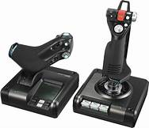

Les prérequis
Les "manettes"
Pour jouer à Dcs il vous faudra un minimum de matériel. Pour être dans de bonnes conditions il faut impérativement un (un manche à balais) car piloter au clavier est très laborieux car il faut être précis dans ses mouvements (au clavier c'est impossible).
La meilleur chose à avoir est un H.O.T.A.S.
HOTAS sont les initiales de : Hand on throttle and stick. C'est à dire : avoir une main sur la manette des gaz et l'autre sur le stick.
Voici un exemple de HOTAS
(ici un logitech X52pro):

L'ordinateur
Essayer de recréer des situations réels grâce à un ordinateur n'est pas une chose facile. Il faut donc un ordinateur plutôt conséquent pour pouvoir jouer
dans de bonnes conditions. Voici un tableau récapitulatif des composants
nécessaire pour jouer en 1080p :
|
| Minimum
| Recommandé
|
| Cpu |
Intel Core i3 ou Amd Ryzen 3 |
Intel Core i5 ou Amd Ryzen 5 |
| Gpu |
Gtx 760 ou R9 280x |
Gtx 1070 ou Vega 56 |
| Ram |
8/16go |
16go |
| Stockage |
120Gb hdd |
120Gb ssd |
Équipement optionnel
Casque Vr
La réalité virtuelle permet une meilleur immersion. Dans un simulateur de vol, un casque de réalité virtuelle permet de s'affranchir des mouvements de tête à la souris et permet d'être plus précis dans nos mouvements. Par exemple elle
permet un meilleur suivi des avions ennemis, et lorsque l'avion permet de verrouiller un avion en le regardant elle s'avère extrêmement pratique.